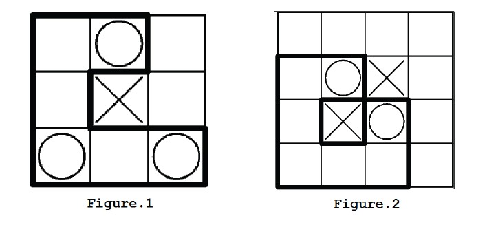

HDU4113. Construct the Great Wall
内存限制：40000/20000 MS (Java/Others) 时间限制：32768/32768 K (Java/Others)
题目描述

A defensive wall is a fortification used to protect a city or settlement from potential aggressors. From ancient to modern times, they were used to enclose settlements.
Generally, these are referred to as city walls or town walls.
Even though, our ancestors decided to build a Great Wall to protect the northern borders of the Chinese Empire against invasion by various nomadic groups.
The map is given as an rectangle area of size N × M. Each grid is an empty area, a city or an enemy. The Great Wall is a simple polygon build alone the edge of the grids, enclosing all the cities and keeping all the enemies out.
The Great Wall is not easy to build, so we should make the Great Wall as short as possible. Now it is your job to calculate the length of the shortest Great Wall so that it can protect all the cities from the enemies.
输入格式
The first line contains an integer T(1 <= T<= 50), indicating the number of test cases.
Each test case contains several lines.
The first line contains two integer H,W(1 <= H,W <= 8), indicating the number of rows and columns of the map.
The followingH lines containsW chars, indicating the map. 'o' represents a city, '.' represents a empty area and 'x' represents an enemy.
You can assume that there will be at least one city on the map.
Each test case contains several lines.
The first line contains two integer H,W(1 <= H,W <= 8), indicating the number of rows and columns of the map.
The followingH lines containsW chars, indicating the map. 'o' represents a city, '.' represents a empty area and 'x' represents an enemy.
You can assume that there will be at least one city on the map.
输出格式
For each test case in the input, print one line: "Case #X: Y", where X is the test case number (starting with 1) and Y is the length of the shortest Great Wall (-1 if impossible).
样例
样例输入
3
3 3
.o.
.x.
o.o
4 4
....
.ox.
.xo.
....
5 5
.ooo.
.x...
..xoo
x.xoo
.ox.x样例输出
Case #1: 14
Case #2: -1
Case #3: 28
Hint
A simple polygon is a closed polygonal chain of line segments in the plane which do not have points in common other than the common vertices of pairs of consecutive segments.
The solution for the first test case in sample is shown in Figure 1.
There is no solution for the second test case because no matter how you build the Great Wall, it will always intersects with itself. (Figure 2).
